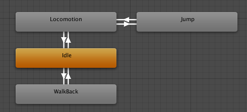

State Machine Basics
The basic idea is that a character is engaged in some particular kind of action at any given time. The actions available will depend on the type of gameplay but typical actions include things like idling, walking, running, jumping, etc. These actions are referred to as states, in the sense that the character is in a "state" where it is walking, idling or whatever. In general, the character will have restrictions on the next state it can go to rather than being able to switch immediately from any state to any other. For example, a running jump can only be taken when the character is already running and not when it is at a standstill, so it should never switch straight from the idle state to the running jump state. The options for the next state that a character can enter from its current state are referred to as state transitions. Taken together, the set of states, the set of transitions and the variable to remember the current state form a state machine.
The states and transitions of a state machine can be represented using a graph diagram, where the nodes represent the states and the arcs (arrows between nodes) represent the transitions. You can think of the current state as being a marker or highlight that is placed on one of the nodes and can then only jump to another node along one of the arrows.

The importance of state machines for animation is that they can be designed and updated quite easily with relatively little coding. Each state has a Motion associated with it that will play whenever the machine is in that state. This enables an animator or designer to define the possible sequences of character actions and animations without being concerned about how the code will work.
State Machines
Unity's Animation State Machines provide a way to overview all of the animation clips related to a particular character and allow various events in the game (for example user input) to trigger different animations.
Animation State Machines can be set up from the Animator Controller Window, and they look something like this:

State Machines consist of States, Transitions and Events and smaller Sub-State Machines can be used as components in larger machines. See the reference pages for Animation States and Animation Transitions for further information.